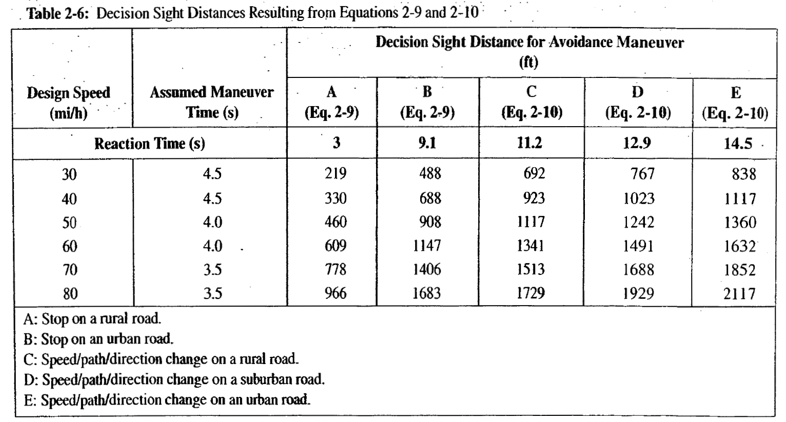
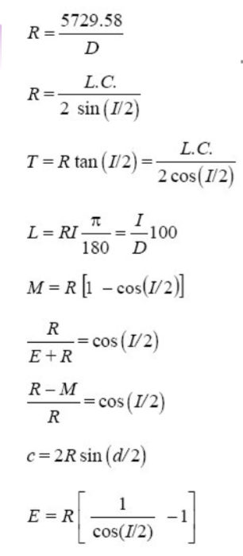
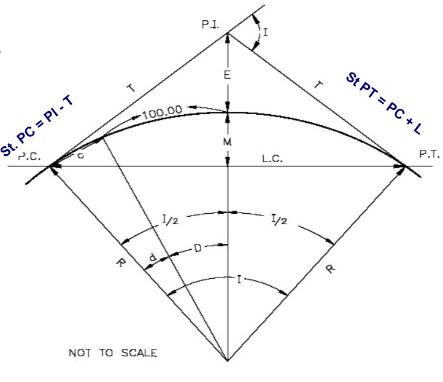
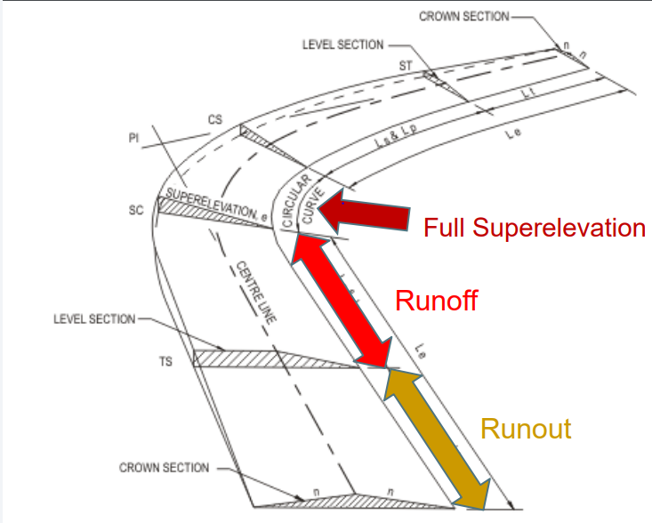
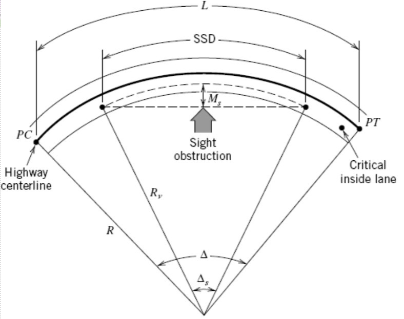
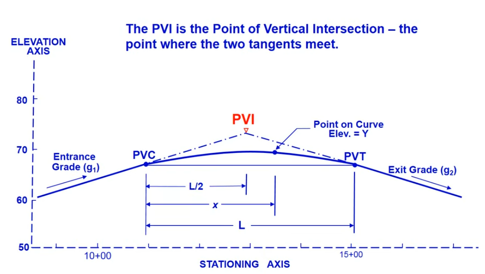
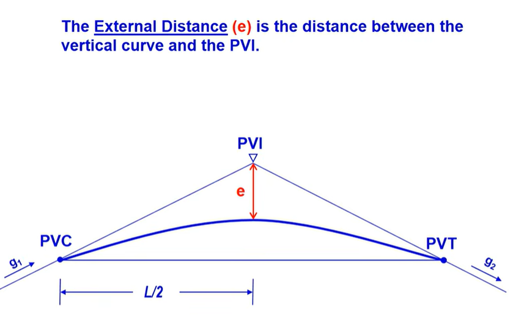

Exam 1: Formula Sheet for Practice Only
Author
ECIV 542
Exam 1/MIDTERM: Related Formulas
1. Sight Distance (SD)
1.1 Stopping SD (SSD)
\[SSD\ =d_r +d_b\] \[SSD\ = 1.47 \times S_i \times t_r + \frac{S_i^2 - S_f^2}{30(F \pm G)}\]
Where:
- \(d_r\): Reaction Distance
- \(d_b\): Braking Distance
- \(S_i\) or \(S_f\): speed (initial or final)
- \(G\): Grade (%)
- \(F=\frac{a}{g}\): Coefficient of friction,
- \(t_r=\) Reaction time
- AASHTO Design value: 2.5 sec
- ITE Signal Design value: 1 sec (Expectancy)
- \(a\): deceleration rate
1.2 Decision SD (DSD)

2. Roadway Design
2.1 Horizontal Curve Design
Alignment and its equations


2.1.2 Superelevation
\[L_r = \frac{w \times n \times e_d \times b_w}{\Delta}\]
- \(L_r\) = minimum length of superelevation runoff, ft
- \(w\) = width of lane, ft
- \(n\) = number of lanes being rotated (i.e. lanes in one direction)
- \(e_d\) = design superelevation rate, expressed as a decimal
- \(b_w\) = adjustment factor for number of lanes rotated
- 1: for one lane, 0.75 for two, 0.67 for three
- \(\Delta\) = maximum relative gradient, (Table 27.3) expressed as a decimal
\[L_t = \frac{e_{NC}}{e_d} \times L_r\]
- \(L_t\) = length of tangent runoff, ft
- \(L_r\) = length of superelevation runoff, ft
- \(e_{NC}\) = normal cross-slope, % (for drainage)
- \(e_d\) = design superelevation rate, %

2.1.3 Min. Radius of Curve
\[R_{min} = \frac{V^2}{15(e+f)}\] Where,
- \(R_{min}\) = Minimum radius of the horizontal curve (measured in feet)
- \(V\) = Design speed (measured in mph).
- \(e\) = Rate of superelevation or road banking (expressed as a decimal, e.g., \((0.06) for \(6\%))\).
- \(f\) = Side friction factor or coefficient of friction (expressed as a decimal based on your design speed).
2.1.4 SSD on the curve
- \(d_{ssd}=1.47S_i t + \frac{S_i^2 - S_f^2}{30(F \pm G)}\)
- Design Stds:
- \(F=0.348\)
- \(M_{s}=R_v(1- cos \frac{90d_{ssd}}{\pi R_v})\)
- \(R_v = \frac{5729.58}{D_v}\)

2.2 Vertical Curve Design
2.2.1 Alignment and its equations
- \(Y=ax^2+bx+c\)
- \(Y\) = elev. of any point on the curve
- \(x\) = distance along stationing from PVC (VPC)
- \(a = \frac{g_2-g_1}{2L}\)
- \(b = g_1\) = entrance grade
- \(c\) = elev. of PVC (VPC) = elev. of PVI (VPI) - \(g_1 - \frac{L}{2}\)
- \(L\) = length of curve

- \(y\) (lowercase) = \(ax^2\) = tangent offset
- \(x=\frac{L}{2}\)
- \(y=ax^2 = a (\frac{L}{2})^2\)
- \(y=ax^2 = \frac{g_2-g_1}{2L}(\frac{L}{2})^2\)
- \(y=ax^2 = \frac{AL}{8}\)
- External Distance (e): between PVI and vertical curve

Ver. Curve: Special Points
- \(Y=ax^2+bx+c\)
- For High/Low point on the curve \(\frac{dY}{dx} = 0\)
- \(\frac{d}{dx}(ax^2+bx+c) = 0\)
- \(x_{high/low} = \frac{-g_1L}{g_2-g_1}\)
2.2.2 Min. length of Curve and 2.2.3 SSD on the curve
- available sight distance ≥ required stopping sight distance
- driver’s sight line just “grazes” the parabolic curve.
Min. Length (\(L_{min}\))
- Driver and object both on the ver curve (\(d_{ssd} < L\))
- \(L_{min} = \frac{|g_2 - g_1| \times d_{ssd}^2}{2158}\) CREST curve
- \(L_{min} = \frac{|g_2 - g_1| \times d_{ssd}^2}{400+3.5d_{ssd}}\) SAG curve
- sight distance extends beyond the curve onto a tangent \(d_{ssd} > L\)
- \(L_{min} = 2d_{ssd} - \frac{2158}{|g_2 - g_1|}\) CREST curve
- \(L_{min} = 2d_{ssd} - (\frac{400+3.5d_{ssd}}{|g_2 - g_1|})\) SAG curve
- \(G_1\) and \(G_2\) are in \(\%\)
3. Traffic Stream Characteristics
3.1 Macroscopic Variables
- Traffic Volume, \(V\)
- Traffic Flow, \(q\)
\(q = \frac{n}{t}\)
Daily Volumes/Flow (vpd, Vehicles per day)
| Defn | Space | Count Period, t | Formula |
|---|---|---|---|
| AADT: | Given location | 365-day or 1 year | \(\frac{n}{t=365}\) |
| AAWT: | Given location | weekdays over a full 365-year | \(\frac{n}{t=260}\) |
| ADT : | Given location | less than one year | \(\frac{n}{t<365}\) |
| AWT : | Given location | weekdays and less than one year (month) | \(\frac{n}{t\ weekdays\ and\ <365}\) |
- Hourly Volumes
- Peak hour: The single hour of the day that has the highest hourly volume is referred to as the peak hour.
- Peak-hour Traffic Volume: Traffic Volume in the peak hour
- Directional Design Peak Hour (DDHV)
- \(DDHV= AADT \times K \times D\)
- \(K\) = proportion of daily traffic occurring during the peak hour
- \(D\) = proportion of peak hour trafic traveling in the peak direction of flow.
- Sub-Hourly Volumes Volumes observed for periods of less than one hour
- Hourly Volume: Volume in one-hour
- Hourly Rates of Flow: Volumes observed for periods of less than one hour and expressed as equivalent hourly volume
- Peak Hour Factor
- \(PHF = \frac{V}{4*V_{m15}}\)
3.2 Microscopic Variables
- 4. Traffic Flow Theory
- 4.1 Fundamental Identity Eq
- 4.2 Traffic Stream Models
- 4.3 Traffic Shockwave At Signalized Intersection
- 5. Traffic Control Devices
- 5.1 Intro to MUTCD Manual
- 5.2 Traffic Signs, Markings, Traffic Signals
- 6. Statistical Applications in Transportation
- 6.1 Summarizing Data (Central Tendency, dispersion)
- 6.2 Probability and Probability Distribution,
- 6.3 Hypothesis Testing
- 6.3.1 Large sample inferences for two means
- 6.3.2 Small sample inferences for two means
- 6.3.3 Inferences for two variances